BeaconKV：用历史查询代表保护长推理的远程回看
- 论文：BeaconKV: Key-Value Cache Compression Guided by Beacon Queries for Efficient Large Reasoning Model Inference
- 作者：Janghyeon Kim、Minsoo Kim、Kyuhong Shim、Jungwook Choi。
- 机构：第一作者主要机构为汉阳大学；合作机构为成均馆大学。
- 时间与来源：arXiv v1，2026 年 9 月 4 日公开；2026 年 9 月 8 日核验原文。PDF 首页标注 ICML 2026 / PMLR 306；本次以 arXiv 版本为内容依据。
- 代码状态：未核验到本文独立代码仓库。以下数值均为论文报告，本轮没有独立运行模型复现。
1. 背景和问题
仅用近期查询估计未来的重要性，会在长推理中提前删除随后需要回看的远处上下文。
这句话压缩翻译了论文摘要与引言的核心问题。大推理模型通过生成很长的思维链逐步求解，长输出一方面增加可用于试错、验证和分解的计算，另一方面也让自回归解码的键值缓存持续增长。已有词元的键和值需要留在显存中，供后来每一步注意力访问；即使模型权重不变，缓存也会随并发数、层数、键值头数和序列长度增长。因此，把一个请求的生成长度从几千提高到三万多，可能直接改变一张卡能同时服务的请求数。引言用 Qwen3-4B、32K 输出、批量 16 举例，称仅 KV 缓存就可能超过 77 GB；这个动机例子与后文批量 14 的实测总峰值显存属于不同口径，不能混成同一条测量结果。
KV 逐出方法试图在固定预算下保留最重要的位置。其困难在于决定重要性的时刻早于真正需要该位置的时刻：一个中间结论刚被计算完，近期的几个查询可能都在执行局部代数变换，于是早期计划得分很低；几百步之后模型重新检查约束或换解法时，却可能再次需要它。压缩时一旦删除某个键值位置，常规解码就不能直接访问它。BeaconKV 关注的正是这种有时间延迟的价值，而不是把所有早期词元都认定为重要。它仍做预算内选择，但希望观察集合能覆盖后来可能出现的注意力方向。
作者将查询分为局部查询与全局查询。局部查询主要注意邻近步骤，有利于当前算式、语句或代码局部连贯；全局查询会把注意力重新投向相距较远的问题条件、推理计划等位置。产生后一类查询的词元被称为 Thought Revisiting Tokens，本文译为“思路回看词元”，简称 TRT。这个名称描述的是注意力模式，不意味着它们在文本上总对应“回想”“检查”等固定词语，更不等于给推理划出了可人工识别的语义阶段。附录 B 的统计做法是取每个查询对输出位置最关注的 150 个键，计算查询与这些位置的平均词元距离，不超过 200 判为局部，超过则判为全局；这些阈值用于诊断，不能当成方法推理时必需运行的分类器。
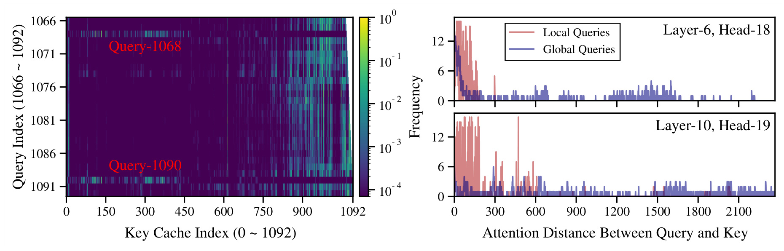
Figure 1 左侧横轴为历史键位置，纵轴是第 1066 到 1092 步的查询，色条为对数尺度注意力强度。多数行的高值集中在右端近期位置，但第 1068 和 1090 步明显重新关注约 100 到 450 的远端区域。这解释了为什么“最后若干步一直看什么”可能错过紧接着一次重要回看：稀疏行与邻居差异很大，窗口里没出现它就没有对应的打分信号。右侧两幅分布以查询到键的距离为横轴，局部查询集中在短距离，全局查询具有远得多的长尾。这里还要保留原图的标注范围：caption 将左侧案例写为 layer 18、head 16，而右侧图内分别标为 layer 6、head 18 和 layer 10、head 19，不能把所有子图都标成同一层头。正文将右侧解释为多个头的统计，与图内标记相容，但论文未进一步澄清 caption 的简写边界。图的说服力是展示现象，尚不能独立证明每个高注意力远端位置都对最终答对有因果贡献。
同一 AIME24 样本的文本案例围绕步行速度、总用时以及咖啡店停留时间求解。第 1068 和 1090 步重新关注早先“先求停留时间和步行速度，再计算新速度对应用时”的解题计划；第 1089 和 1091 步则关注正在进行的分式化简。区别由原文 Figure 2 和附录 Figure 9 的带色下划线文本说明，本笔记将其译述而不重复展示整页英文推理。Figure 3 还在该样本输出位置 512 至 639 上统计不同层头的全局查询频次，表明现象不限于一个头，但它仍是单样本诊断，不能由此声称所有题型、所有模型都具有相同回看频率。
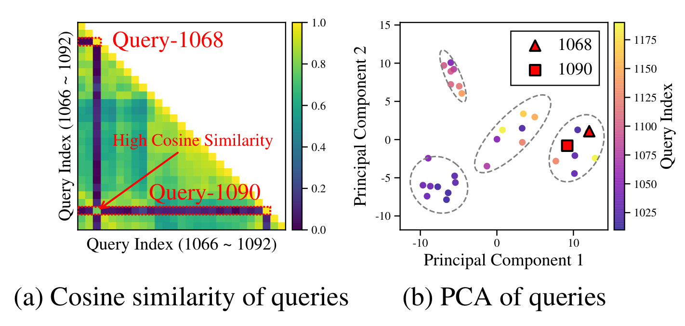
Figure 4 将时间现象转化成向量空间中的可利用结构。左图使用施加旋转位置编码之前的查询做余弦相似度比较，第 1068 与 1090 步虽然与附近大量查询方向不同，却相互接近；这提示把全部近期查询当作未来代理，可能在几何上遗漏一个少见但会重复出现的方向。右图是低平均余弦相似度查询的二维主成分投影，两个回看查询位于同一局部群体，其他查询也呈现若干小群。作者据此提出用少量代表查询充当 beacon，即“信标”。需要注意，二维投影只是一种直观证据，不能据图数出对所有模型都有效的固定簇数；实际算法也没有先识别 TRT 再对 TRT 单独聚类，而是在历史的 pre-RoPE 查询中进行最远点采样。这样选择的是几何覆盖，不是有标签的正确推理模式。若存在方向独特却没有任务价值的查询，它同样可能被保留下来；若未来出现此前完全没有见过的方向，历史信标也无法预知。
从预测问题看，过去注意力是对当时条件的观测，并不是未来重要性的监督标签。近期窗口扩大虽然能提高偶然捕获回看查询的机会，也会重复保存很多接近的局部方向；若无限保留查询历史，又回到了本来想消除的显存增长问题。因此本文同时追求两个目标：用受限状态保留访问方向的多样性，并让这些状态能在周期性逐出时有效参与评分。两者缺一不可，单纯改变缓存容量或给早期位置固定加分都无法完整实现这个设计。
这使 BeaconKV 与几类常见方案形成清晰关系。RPC、SnapKV 代表依赖注意力打分的压缩路线，R-KV 进一步纳入键冗余信息；BeaconKV 更改的是产生评分的观察查询集合。它既没有训练新的逐出策略，也没有插入外部记忆模块或让模型先总结旧上下文。与保留全部缓存的稀疏注意力相比，它实际删除键值，因此能直接降低存储；与缩短思维链相比，它允许模型继续生成长推理。代价是删除不可逆，以及缓存打分需要额外查询状态和计算。本文最值得借鉴的出发点是：压缩器不仅应考虑当前频繁访问的内容，也应保存能代表未来访问方式的少数历史信号。
2. 方法
2.1 周期 KV 逐出与观察查询集合
原文先回顾普通注意力，再在第 4.1 节介绍周期逐出。输入隐藏状态经过查询、键和值投影，因果注意力只允许当前位置访问已经出现的键；解码时仅为新词元计算新的投影，并将其键值附加到历史缓存。下面合并原文公式 1 至 3，突出没有被 BeaconKV 修改的模型计算。符号解释：$X$ 为隐藏状态矩阵，$W_Q,W_K,W_V$ 为投影参数，$Q,K,V$ 为投影结果，$d$ 为该注意力表达采用的维数，$M$ 为因果掩码，$t$ 为解码步，$\Vert$ 表示沿序列维拼接，$O$ 和 $o_{t+1}$ 分别是整段与新增词元的注意力输出。KV 压缩发生在缓存管理层，模型权重和训练目标均保持原样。
压缩前的常见方案用最近窗口内的查询，对当前已有键进行注意力计算，再按最大值或均值聚合。下面对应原文公式 4 至 6。符号解释：$\tau$ 是观察查询的原始位置，$j$ 是缓存位置，$l$ 遍历可访问键，$w_{\tau,j}$ 是归一化注意力权重，$N_{\rm obs}$ 是近期窗口长度，$\mathcal T_{\rm obs}$ 是该窗口的位置集合，$s_j$ 是位置重要度。两个池化方式在此仅列为背景，BeaconKV 后面采用跨查询与头的最大值。同样的 Top-K 保留算子会因为观察集合不同而产生完全不同的缓存内容：只增加预算不能替代增加查询的代表性。
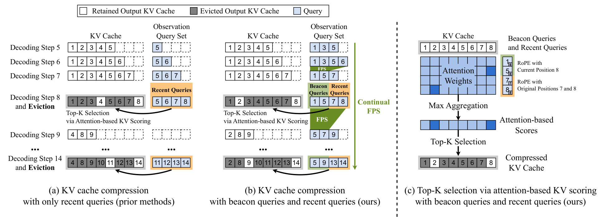
Figure 5 需要沿解码时间读。左边在第八步逐出时仅用近期查询，下一周期再重新依赖最近窗口；中间的查询集合则把过去选中的代表与新查询合并，并通过持续 FPS 压缩，逐出时同时提供信标和近期两种信号。浅蓝块是查询状态，灰色块代表被逐出的输出键值，不能把保存一个信标查询误读为保存了它对应的全部上下文。右侧进一步展开同一次评分：历史信标重做当前位置的 RoPE，近期查询保留各自原位置，产生的注意力权重先逐列取最大，再选出高分缓存。原图用很小的玩具预算展示流程，不能照抄其中的保留比例作为实验超参数。正式实验让输出 KV 达到最大预算后降到其八分之七，下一轮再逐步增长；这样的周期操作避免每一步都全量重新排序，但也意味着旧键值只在触发点接受选择。保留查询提供的是以后评分的观察方向，被永久逐出的键值并不会因为查询还在而自动恢复。这个状态区别是读懂整个图的关键。
2.2 用 Continual FPS 维护历史代表
原文第 4.2 节先验证最远点采样的代表性，再讨论其在线实现。FPS 的输入是尚未施加 RoPE 的查询集合，输出是其中少量真实查询，并不构造新的平均向量。附录算法 1 先选择与整个集合平均余弦相似度最低的点，然后反复挑选“与当前任何代表都不够接近”的点。下面展开该过程。符号解释：$N$ 为当前候选数，$\operatorname{cos}$ 为余弦相似度，$a_i$ 为第 $i$ 个候选的平均相似度，$p$ 为初始化下标，$I$ 为已选下标集合，$S_j$ 为候选 $j$ 与最近代表的相似度，$r$ 为下一次选中下标；采到目标数量 $m$ 后停止。所谓“最远”对应最小的最近代表相似度，而不是最小的两两相似度总和。
若每次从全历史运行 FPS，必须保存所有查询，在 GQA 中多个查询头共用一个 KV 头，历史查询状态甚至会抵消压缩 KV 节省的显存。Continual FPS 改为每头一个有界缓冲区：prefill 时从输入查询采样出初始代表；解码时不断加入新查询，达到上限就再次压缩回下限。符号解释：$Q_{\rm obs}^{\rm pre}$ 是保存的 pre-RoPE 观察状态，$B_Q^{\max}$ 和 $B_Q^{\min}$ 分别是缓冲上、下界，$n_{\rm beacon}$ 与 $n_{\rm recent}$ 是目标信标和近期查询数量。公式 9 的赋值由容量条件触发，$\operatorname{FPS}(Q,m)$ 返回集合 $Q$ 内的 $m$ 个代表。算法不保留每个被丢弃候选的隐式统计量，因此持续版本是对全历史几何覆盖的近似，不能视为与离线 FPS 完全等价。
附录算法 2 给出了观察集合与 KV 缓冲的同步边界。设当前缓存长度为 $L$，当 $L$ 到达 $B_{KV}^{\max}-n_{\rm recent}$ 时，将当前代表固定为本周期信标，并清空近期集合；随后收集最后 $n_{\rm recent}$ 步带原始位置的查询，直到 KV 达到上限。完成逐出后，将本周期信标和近期查询的 pre-RoPE 向量合并，再做 FPS，作为下一周期初始观察状态。这使信标会随推理中出现的新方向改变，而不是始终复制提示词开头。保存 pre-RoPE 状态是必要的接口设计：它将查询内容方向与之后用于评分的位置对齐分开。所有步骤都属于推理时缓存维护，既不训练 TRT 分类器，也不利用未来真实查询；未来代表性只能来自已经观察到的几何结构。
2.3 差异位置对齐、GQA 最大池化与保留
到达逐出时刻 $t$，原文第 4.3 节把信标查询统一旋转到当前位置，让它们模拟“若此刻再出现这种全局方向，会看哪些旧键”；近期查询仍使用生成时的位置，保存局部关系。符号解释：$g$ 为共享 KV 的查询头组，$Q_{\rm beacon}^{g,\rm pre}$ 为该组信标的并集，$\langle q,\tau\rangle$ 是带原位置的近期查询，$\operatorname{RoPE}(q,t)$ 为在位置 $t$ 对向量施加旋转编码。下式的集合写法表达的是两类观察行的合并；实现仍需保留查询头归属，以便与同组共享键值正确对应。信标的当前位置化不是修改缓存键的位置，也不等于把历史文本搬到序列末尾。
用观察查询与现有键计算权重后，BeaconKV 在同一 GQA 组的所有查询头和观察查询上取最大值。随后优先保留前缀和最近位置，用剩余名额选高分位置，排序后同时截取键和值。符号解释：$W[h,q,j]$ 是查询头 $h$、观察查询 $q$ 对位置 $j$ 的注意力权重，$n_{\rm prefix}$ 是保护的前缀长度，$I_{\rm keep}$ 是强制保留索引，$k_{\rm sel}$ 为剩余名额，$I_{\rm final}$ 为最终按序排列的索引；$\widehat K,\widehat V$ 是压缩后的缓存，对应原文公式 7、8 与附录算法 2。最大池化让一个稀有信标的强响应不被很多普通查询平均稀释，但有限 Top-K 仍会竞争名额，不能据此声称只要某个信标看重的位置就一定全部保留。
实验令 $B_{KV}^{\min}=7B_{KV}^{\max}/8$，但文档还有一个需要复现时核对的符号差异：正文实现细节写 BeaconKV 近期查询固定为 16，同时除 R-KV 外的方法保护最近 32 个 KV 词元；附录伪代码却把 $n_{\rm recent}$ 同时用于近期查询和保留窗口。二者不能默默合并成同一个“16”。理解机制时应区分查询观察窗口与强制保留的 KV 窗口，实现时需核查代码或作者说明。前缀保护的数值也不能凭空指定。方法的确定性部分是两路查询、持续采样、不同 RoPE 对齐和组内最大评分，具体保留超参数需要遵循实际实验配置；当前未核验代码，因此这项差异保留为风险，而不做未经证实的纠正。
3. 实验结果
3.1 四模型四任务的主结果
主实验覆盖 R1-Distill-Qwen-7B、R1-Distill-Llama-8B、Qwen3-4B、Qwen3-14B。数学任务为 AIME24 与 MATH-500，代码任务为 LiveCodeBench，科学问答为 GPQA-Diamond。AIME24 报告八次运行的平均 pass@1，其他任务平均四次；最大生成长度为 32768，top-p 为 0.95，temperature 为 0.6。因此比较的是带随机采样的任务成功率，并非固定一条轨迹的逐词元重建误差。附录 Table 6 还报告平均输出长度：四模型在 AIME24 上约为 1.35 万至 1.47 万词元，LiveCodeBench 约为 1.17 万至 1.41 万；长缓存压力具有实际基础，而不能把最大生成长度当作每条样本都生成的长度。
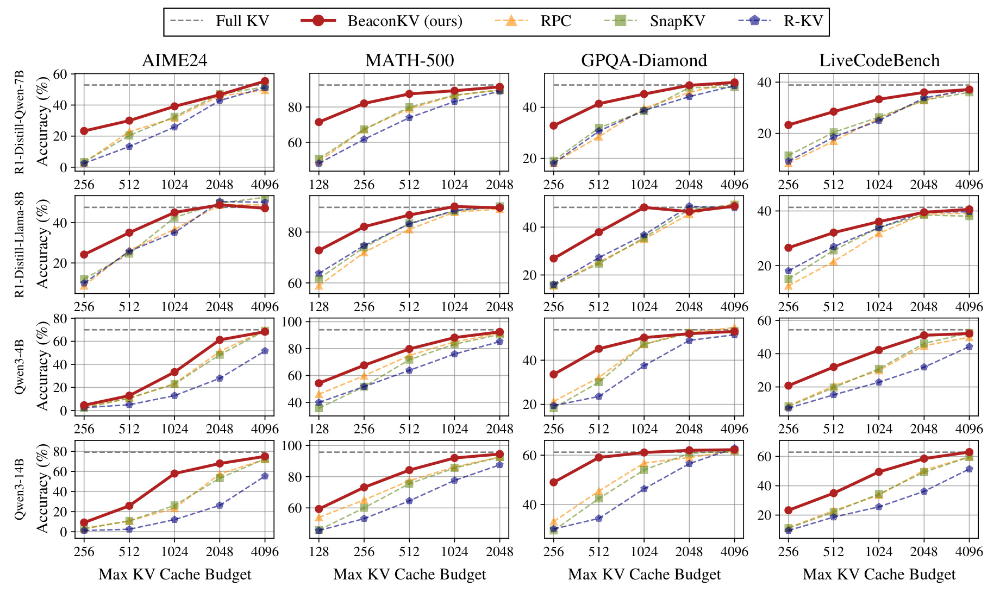
Figure 8 每行是一个模型，每列是一个任务，红色实线为 BeaconKV，灰色水平虚线为完整缓存。横轴是最大 KV 预算，MATH-500 从 128 到 2048，其他列从 256 到 4096；纵轴刻度随任务变化，不能只凭线条高度跨面板比较绝对能力。多数低预算面板中红线明显领先 RPC、SnapKV 和 R-KV，例如 Qwen3-14B 在 AIME24、1024 预算时，正文报告相对既有压缩方法的最大优势达到 31.7 个百分点。这是特定配置的最大差值，不是跨十六个面板的平均提升。预算扩大后，多种方法逐步接近完整缓存，优势通常缩小；同时 R1-Distill-Llama-8B 的 AIME24 高预算端并不是红线始终最高，说明不能把“通常领先”改写为“所有配置最优”。压缩模型个别点略高于完整缓存也不构成压缩增强推理的普遍证明，随机采样、样本有限以及不同保留上下文都可能影响结果。论文展示了预算曲线，但图中没有完整置信区间，因此更可信的是跨多任务的趋势和较大差距，而非相邻小幅波动的名次。
这些任务覆盖数学、科学与代码，但仍主要是开放推理模型上的离线题目，不包含真实线上请求混合、工具调用往返或动态批处理。基线配置也需要一起读：R-KV 按其原文保留最近八个词元，其他方法保留最近三十二个，这不是逐项消除所有实现差异后的唯一变量实验。BeaconKV 的主要证据是低预算下信息选择更有效；若服务的主要成本来自短提示的前馈计算、网络延迟或工具执行，缓存压缩并不自动成为端到端瓶颈的解法。
3.2 代表性与持续采样分别带来什么
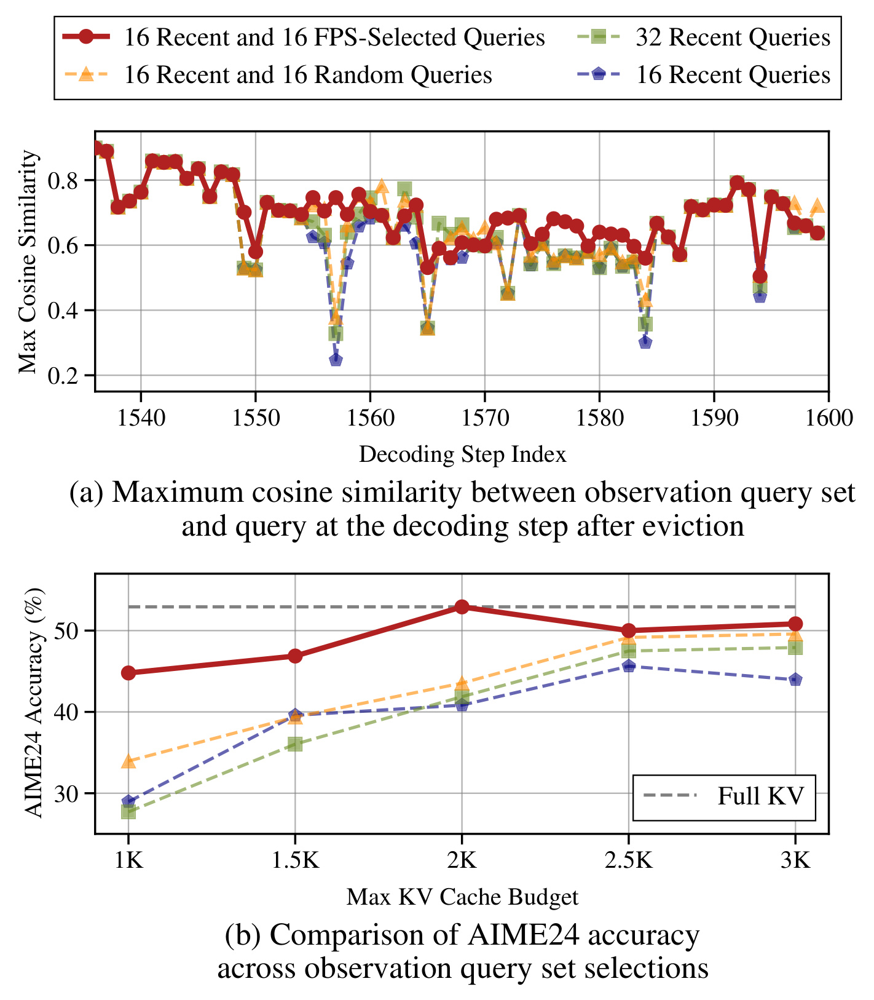
Figure 6 上半部分在一次逐出之后比较观察集合与接下来查询的最大余弦相似度。红线采用十六个近期查询加十六个 FPS 历史代表；其他方案为十六近期加十六随机历史、三十二近期、十六近期。在若干未来查询突然改变方向的位置，只看近期的曲线明显下陷，FPS 组合仍较接近新查询。这是“覆盖少见方向”相较“多存一点最近方向”的直观证据。下半部分固定 R1-Distill-Qwen-7B 的 AIME24，扫描 1K 到 3K 预算，红线在图示预算下均最高，但自身并非随预算单调上升；例如 2K 点接近完整缓存虚线，2.5K 又有回落。上图的相似度是单轨迹诊断，不能直接换算成答对概率，下图才检验最终任务指标。与随机历史比较还说明，收益不仅来自额外引入旧查询；如何覆盖历史方向很重要。不过作者没有给这些点配套不确定性范围，不能把每个微小差异都解释成稳定机制。
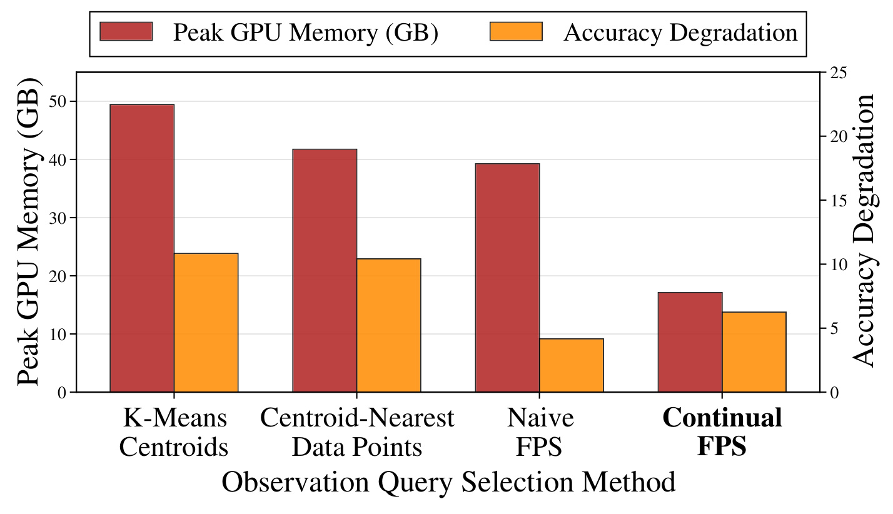
Figure 7 比较 K-Means 质心、最靠近质心的真实数据点、全历史 Naive FPS 与 Continual FPS，红柱对应左轴总峰值 GPU 内存，橙柱对应右轴准确率退化。持续 FPS 的红柱明显更低，约落在十几 GB，而全历史 FPS 接近四十 GB，说明如果为了打分而保存全部查询，可能付出很大的额外显存。准确率方面，持续 FPS 的退化略高于全历史 FPS，但明显低于两种聚类代表方案；因此应把它理解为近似覆盖与有限存储的折中，不能称其与离线最远点采样毫无损失。质心平均可能产生不对应任何真实解码查询的方向，而质心最近点又偏向密集区域，这为几何多样性方案的差异提供一种解释，不过这些解释不是该图单独证明的因果结论。原图没有逐柱印出精确数值，本笔记不从像素估读小数，也不把这张选择算法诊断图的显存比值替换摘要使用的表四倍率。
两个实验的作用不同：Figure 6 主要回答历史代表能否改善未来查询覆盖，Figure 7 回答怎样在保持这种收益的同时限制查询存储。只看最终准确率会遗漏方法本身的缓冲开销，只看显存又可能偏好破坏代表性的过强压缩。实际工程还需要补测 FPS 调用频率、逐出触发点的单次开销与持续批处理中的抖动，因为平均延迟无法反映每轮填满缓冲时的瞬时成本。
3.3 查询配比与聚合方式的消融
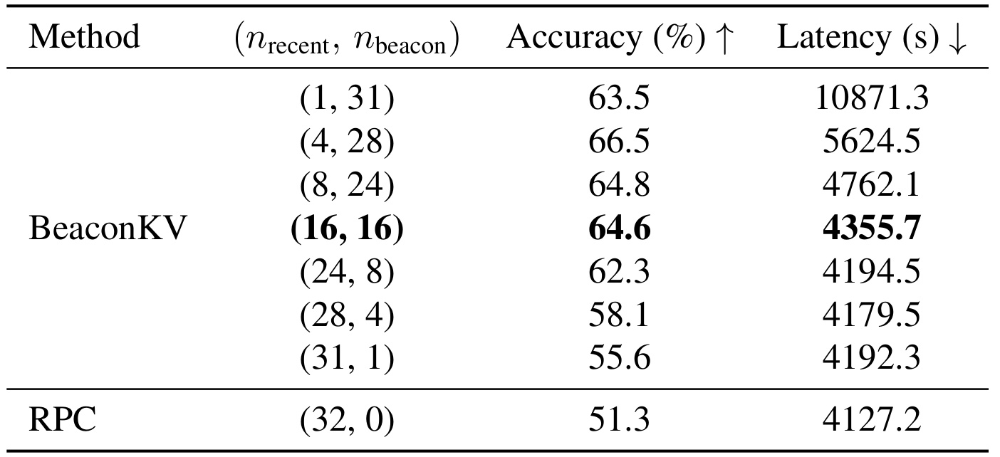
Table 1 在 Qwen3-4B、AIME24、最大 KV 预算 2048 下，将观察查询总量保持为三十二，改变近期与信标的分配。全近期 RPC 为 51.3% 与 4127.2 秒；十六近期加十六信标得到 64.6% 与 4355.7 秒，增加的延迟约 5.5%，准确率增加 13.3 个百分点。不过最高准确率是四近期加二十八信标的 66.5%，不是粗体标出的十六加十六；后者被推荐是因为时间与准确率综合折中。极端的一近期加三十一信标为 63.5%、10871.3 秒，时延远高于平衡设置，说明观察缓冲容量、压缩频率与近期信息不足可能共同影响开销，不能把“信标更多”当作无代价改良。反方向把信标降到一个，准确率为 55.6%，已经接近纯近期基线。这组数据支持两路信号均有价值，但不支持所有模型和任务都使用固定一比一最优；表内也未提供重复实验误差，部署选择应在目标工作负载上重新测量。
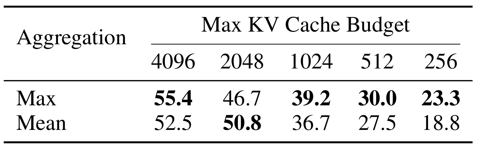
Table 2 固定 R1-Distill-Qwen-7B 与 AIME24，同时在查询与头维度比较 Max 和 Mean。4096、1024、512、256 四个预算下，Max 分别为 55.4、39.2、30.0、23.3，Mean 为 52.5、36.7、27.5、18.8，最大池化在这些配置上较好，最紧预算增加 4.5 个百分点。这与稀有高响应不应被大量普通查询均值稀释的动机一致。但 2048 预算时结果反转，Mean 达 50.8，Max 只有 46.7，相差 4.1 个百分点。这个反例必须与机制一起保留：最大值也可能过度重视个别噪声方向，或因采样与被保留上下文变化影响后续推理；原文并没有独立实验确定反转原因。作者选择 Max 是整体趋势上的经验设计，不是证明了它在所有预算上优越。此表还同时改变两个聚合维度，无法单独区分“跨查询取最大”与“跨 GQA 头取最大”各贡献多少，进一步做二维消融会更有解释力。
3.4 动态历史代表是否等同于保留开头
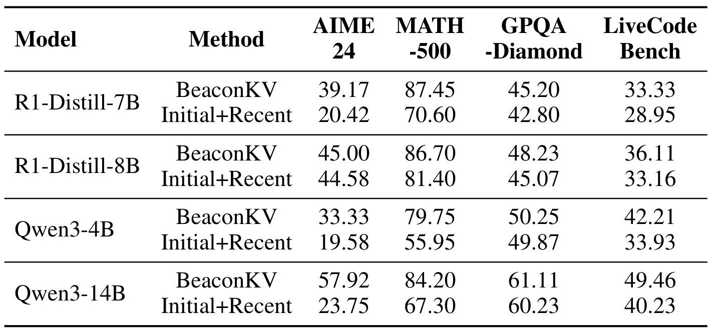
Table 3 在最大缓存 1024 下比较 BeaconKV 与固定初始查询加近期查询的 Initial+Recent。四个模型与四个任务都出现正差值，但幅度非常不均匀：Qwen3-14B 的 AIME24 从 23.75% 到 57.92%，提升 34.17 个百分点；同模型 GPQA-Diamond 仅从 60.23% 到 61.11%，提升 0.88 个百分点。R1-Distill-Llama-8B 的 AIME24 为 44.58% 到 45.00%，差值仅 0.42，而 Qwen3-4B 的 MATH-500 从 55.95% 到 79.75%，差值达到 23.80。这里 34.17 与前文 31.7 不是矛盾：前者针对新增的固定历史消融基线，后者是正文与既有压缩方法的最大差值，不能混为同一个基线结果。这组实验驳斥了“只要把开头查询塞回来就能解释全部收益”的简单解释，表明随轨迹更新的代表集合值得保留；但它不能证明 FPS 保留下来的每个代表都对应 TRT，也未完全分离代表多样性与更新时间的影响。更细的对照应匹配相同更新时刻，只改变抽样准则。
3.5 总峰值显存、吞吐与准确率必须同条件解读
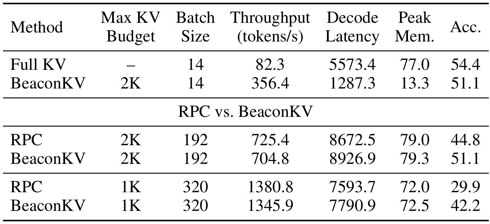
Table 4 是摘要 5.8 倍和超过 4.3 倍的具体出处。系统为单张 NVIDIA A100 80GB，模型 Qwen3-4B，生成长度 32K。第一块固定批量十四，完整缓存的峰值 GPU 内存为 77.0 GB、吞吐 82.3 tokens/s、解码延迟 5573.4 秒；BeaconKV 使用 2K 最大 KV 预算，对应 13.3 GB、356.4 tokens/s、1287.3 秒。计算可得显存比约 5.79，吞吐比约 4.33。这里比较的是总峰值 GPU 内存，不能说纯 KV 张量恰好压缩了 5.8 倍；同时 LiveCodeBench 准确率从 54.4% 降为 51.1%，损失 3.3 个百分点，“接近完整缓存”仍有真实质量代价。两个倍率来自相同模型、相同批量、同一组 2K 对照，不应联乘，也不代表对更短生成、其他模型或所有并发水平同样成立。
第二、第三块回答的是另一件事：与已经压缩的 RPC 在相同预算及批量下相比，BeaconKV 是否还能维持系统效率。2K 预算、批量 192 时，RPC 为 725.4 tokens/s、79.0 GB、44.8%，BeaconKV 为 704.8 tokens/s、79.3 GB、51.1%；质量增加 6.3 个百分点，但吞吐低约 2.8%。1K、批量 320 时，RPC 为 1380.8 tokens/s、72.0 GB、29.9%，BeaconKV 为 1345.9 tokens/s、72.5 GB、42.2%；质量增加 12.3 个百分点，吞吐低约 2.5%。因此同预算下最稳妥的结论是“小幅系统开销换取显著准确率收益”，而不是“比 RPC 还快四倍”。批量不同的整块延迟不能直接理解为一个用户请求的响应时间，更不能拿批量 320 的总吞吐与批量十四的完整缓存计算算法本身加速比。
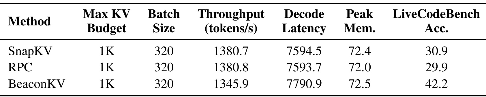
Table 5 补入 SnapKV，使系统比较不只围绕 RPC。三种方法均为 Qwen3-4B、1K 最大预算、批量 320；SnapKV 为 1380.7 tokens/s、7594.5 秒、72.4 GB、30.9%，RPC 为 1380.8 tokens/s、7593.7 秒、72.0 GB、29.9%，BeaconKV 为 1345.9 tokens/s、7790.9 秒、72.5 GB、42.2%。BeaconKV 相对 SnapKV 增加 11.3 个百分点准确率，吞吐仍稍低，峰值显存基本相近。附录于是再次支持“同资源附近提高保留信息的质量”，并未改变表四相对完整缓存才有大幅速度提升的事实。这个结果还提醒我们，比较预算名义上相同并不意味着所有实际存储字节完全相同：额外查询代表、评分中间结果和运行时分配都可能贡献峰值开销。论文给出了总体系统指标，但没有逐项拆解 CUDA 内核、查询缓存和分配器占用，因此当前不能把多出的半 GB 精确归因到某一个模块。
总体看，证据链从单轨迹全局回看，到向量代表性，再到四模型预算曲线和系统对照，是连贯的。较强证据在于多个任务低预算下的较大准确率差距，以及明确硬件条件下的总显存下降；较弱的部分是机制诊断主要由少量案例展示、某些配置的小幅优势没有误差区间、实际服务尾延迟和不同工作负载尚缺检验。将这两类证据分开，有助于决定是否值得复现，而不会误把论文中的最好倍率当成通用承诺。
4. 总结
BeaconKV 的贡献是把历史查询方向变成一种小型、可持续更新的缓存选择依据。推理模型的大部分步骤可能在执行局部细节，偶发回看却会重新需要很久以前的条件与计划；过去常见的近期查询窗口容易在这种时间结构下误删信息。算法通过 pre-RoPE 最远点采样维护几何代表，在逐出时把历史信标旋转到当前位置，再与保留原位置的近期查询合并，以 GQA 组内最大注意力选择缓存。它不改变模型训练，是一个可插入解码缓存管理的推理算法，但需要额外查询维护及评分计算。
主要局限包括以下四项，分别对应适用范围、代理假设、实现复现和系统评估。
- 工作负载范围有限。 作者也在附录指出，实验主要是长推理任务，普通检索、摘要和一般长文本生成仍缺充分验证。多轮 Agent 中外部结果的突发写入是否产生相同查询结构，当前没有证据；不能直接从数学题移植结论。
- 几何覆盖不等于任务价值。 少见方向可能是噪声，未来也可能出现历史未曾包含的方向。连续 FPS 会丢弃候选，可能逐轮遗忘稀有但尚未重复的模式；目前没有长期覆盖误差或不可逆误删率的保证。
- 超参数与文档边界需澄清。 最佳信标配比随任务可能变化，Max 在 2048 预算有明确反例；正文最近 KV 保护窗口为三十二、近期查询为十六，而附录符号复用存在歧义。没有核验独立代码之前，不宜宣称可一键复现原始数字。
- 系统收益与质量共同约束。 总峰值内存降至原来的约六分之一的配置仍损失 3.3 个百分点代码准确率；相同预算下也略慢于 RPC 和 SnapKV。只有单卡 A100 的给定长生成设置，缺少服务级尾延迟、异构并发、不同 GPU 与量化组合的完整数据。
接下来值得具体跟进三件事。第一，做一次缓存逐出事件级复现：记录远端关键位置在删除前后的保留率、未来是否真正被高注意力访问，以及删去它们对最终答案的干预影响，区分几何相关与推理因果。第二，拆开查询窗口和 KV 保护窗口，固定周期、预算与采样种子，独立比较跨头/跨查询的 Max 与 Mean，验证 2048 反转以及十六加十六折中的稳定性。第三，在实际请求长度分布下测预填充、逐出峰值、单请求延迟和完成正确题目的有效吞吐，并与量化、分页缓存等手段组合评估，而不是只追求 tokens/s。
对研究阅读而言，本文最有启发的是把“压缩哪些内容”与“用什么历史信号预测未来访问”联系起来。保留少量历史代表方向能让固定容量缓存更懂得等待一次远程回看；但真正的采用标准仍应是目标任务中可重复的质量与成本折中。当前原文支持在多种开放长推理模型的低预算条件下继续深入验证，尚不足以将它描述成没有准确率损失、对所有推理服务普遍加速的缓存替代品。